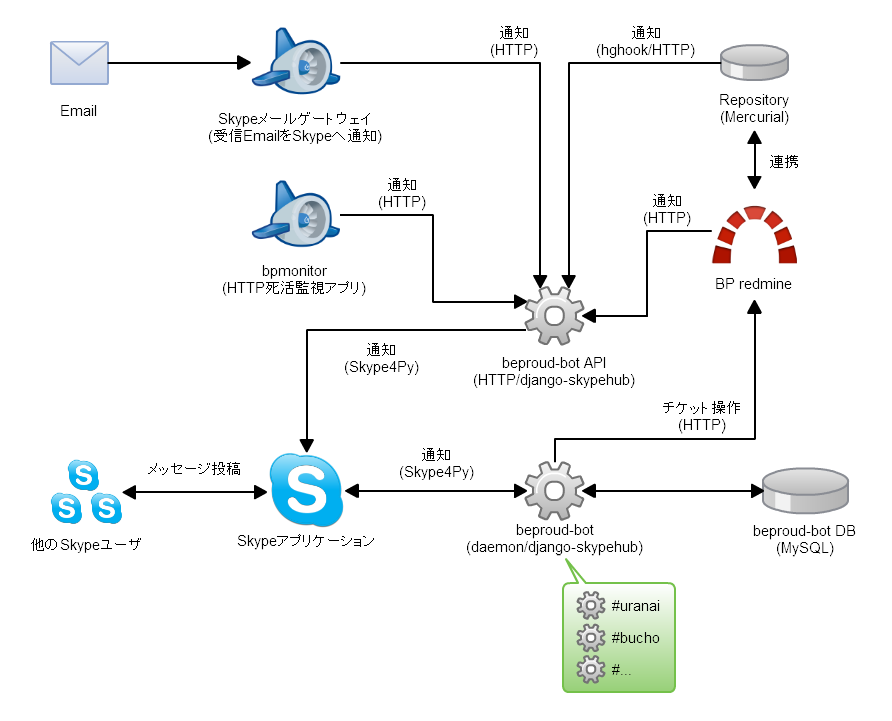

Pythonな会社でchefしてる例の紹介¶
おまえ、誰よ¶

- 活動:
- Sphinxメンテナ, Sphinx-users.jp会長
- Python系, XP系, PyConJP 2012 副座長
- 言語:
- C++/C/8086/Python/Rails/chef
提供¶

最初はVagrant¶
- VirtualBoxのコンソール出さずに使える便利
- chefっていうので環境設定できるらしい
- 見よう見まねで使ってみる -> 便利！！
会社のRedmineの管理が大変¶
- Pythonの会社なのでメンテナンスが大変
- Redmineにプラグイン入れてそのままリポジトリ管理
- 構築手順とか残っているような無いような・・
- よしchefを使おう
Redmineはアプリ？ミドルウエア？¶
- ミドルウエアです
- ミドルウエアなのでCapistranoは使いません
- ということでChefで突き進みます
Redmineの構成¶

Redmineセットアップ出来た¶
- rvm入れてruby入れる
- redmine入れる
- redmineプラグイン入れる
- 記法をreSTにしてblockdiag対応させる
- DBサーバーとか設定する
- apache設定する
DBセットアップ出来た¶
- MySQL入れる
- GRANTする
これからやる¶
- Skypeプラグイン入れよう
- Mercurialリポジトリサーバー起動させる
- メール送信設定
あきらめ¶
- Skypeクライアントのインストール
- xvfbにvncで接続してインストールウィザードをクリックする
悩み1¶
- 最初に使い始める人に簡単に使う方法を提供したい
- VirtualBox + Vagrant + (Berkshelf | Librarian)
- Rubyに明るくないのでgem周りでけっこうはまる
社内での反応¶
- 半年前は chefなの？ という感じ
- 今はみんな「興味はある」
- 最初のハードル(Vagrant+chef)がクリアされると「よさそう」という反応
- とりあえず開発に使用し始めました！
悩み2¶
- RedmineのバージョンアップをChefでどうやって表現するの？
- chefで環境つくればいいから、新しい環境作って切り換えかなあ
はまり1¶
- attributesに default[:mycookbook][:key] = 'value' で初期設定
- recipesで node[:mycookbook][:key] で使う
- Vagrantで chef.json = {:mycookbook => {:key => 'other'}}
- 動く
- Vagrantに設定せずrolesに移行
- 動かない！！
はまり2¶
recipe[nginx]
- nginxサーバー立ち上がった
recipe[jenkins::proxy_nginx]
- nginxをソースから入れようとする
- nginxユーザーを作ろうとして失敗する><
自作cookbook¶
- 自分でいくつか作ったものを公開してます
- rvm-redmine : rvm環境にredmineをインストール
- bp-redmine : rvm-redmine上にBP社カスタマイズ
- python-build : Pythonの2.4-3.3までビルド
- download-make-install : CMMIです